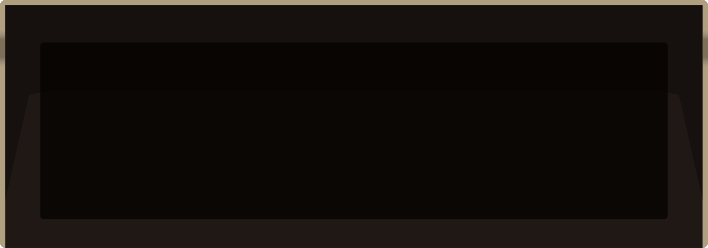

No data for selected station & platform, try another one!
Station
--fantasy--
12th St. Oakland City Center
16th St. Mission (SF)
19th St. Oakland
24th St. Mission (SF)
Ashby (Berkeley)
Antioch
Balboa Park (SF)
Bay Fair (San Leandro)
Berryessa
Castro Valley
Civic Center (SF)
Coliseum
Colma
Concord
Daly City
Downtown Berkeley
Dublin/Pleasanton
El Cerrito del Norte
El Cerrito Plaza
Embarcadero (SF)
Fremont
Fruitvale (Oakland)
Glen Park (SF)
Hayward
Lafayette
Lake Merritt (Oakland)
MacArthur (Oakland)
Millbrae
Milpitas
Montgomery St. (SF)
North Berkeley
North Concord/Martinez
Oakland Int'l Airport
Orinda
Pittsburg/Bay Point
Pittsburg Center
Pleasant Hill
Powell St. (SF)
Richmond
Rockridge (Oakland)
San Bruno
San Francisco Int'l Airport
San Leandro
South Hayward
South San Francisco
Union City
Warm Springs/South Fremont
Walnut Creek
West Dublin
West Oakland
Platform
1
2
3
4
Built by
Lou Huang
. Not affiliated with
BART
.
Source code.